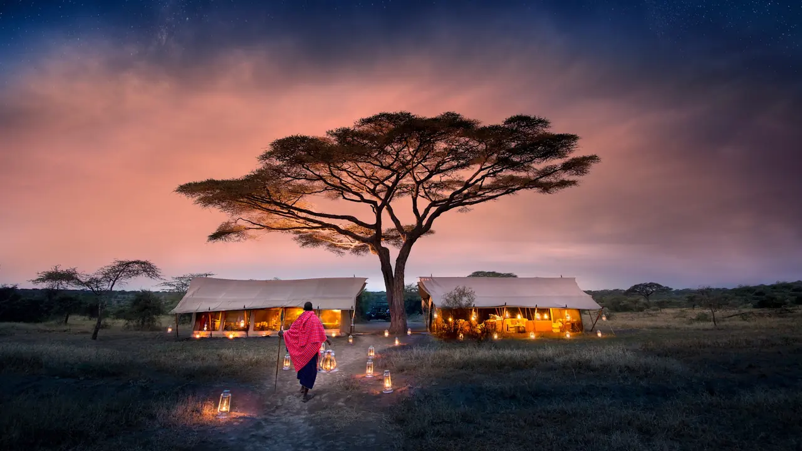
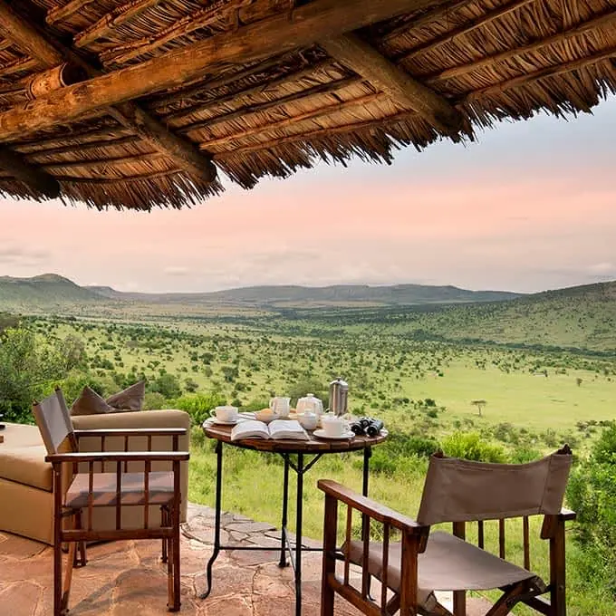
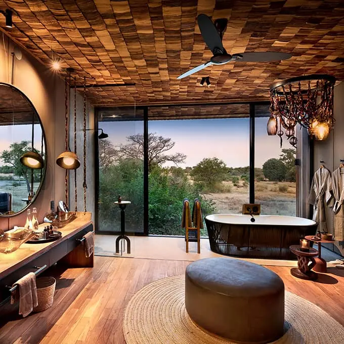

Tanzania is Africa's visual masterpiece—a country of natural splendour, astounding wildlife, and geological wonders. Africa's highest mountain, Kilimanjaro, rises from lush grassy plains and towers over the land, its snow-capped peak a sight to behold. But it's the Serengeti that captures the imagination of every true safari lover.
The Serengeti National Park, meaning "endless plains" in the local Maasai language, is undoubtedly one of the world's most celebrated wilderness areas. It's an ongoing source of inspiration to writers, filmmakers and photographers—and soon, to you and your family.
The Ultimate Safari Experience
The annual movement of wildebeest and other herbivores across the Serengeti-Mara ecosystem is rarely the same in precise timing and direction, but what remains constant is its breathtaking scale. Two million wildebeest, zebra and gazelle race for their lives, dodging crocodiles, hyenas and big cats with big teeth.

This is the showstopping event, but by no means the only exciting wildlife spectacle. Year-round, lions, cheetahs and spotted hyenas stalk Cape buffalo, waterbuck and giraffe wandering freely across the savannah. The Serengeti delivers extraordinary wildlife encounters in every season.
Why Choose &Beyond
With just nine tents at each private campsite, enjoy the luxury of complete contentment and nights spent in the African bush. Using only private campsites, these mobile camps are intimate and exclusive—the ultimate in luxury camping.
Where to Stay

&Beyond Serengeti Under Canvas
This luxurious mobile tented camp moves around the Serengeti, bringing you within range of the Great Migration. Private butler service, chandeliers, silverware, crystal, ensuite flush toilets, heated bucket showers and comfortable beds with fluffy duvets. Camping reimagined.
Enquire About This PropertyThe camp movement is carefully planned to anticipate the movements of the Great Migration, bringing you as close as possible to the wildebeest action. The campsites move five times a year to better enable close access to this extraordinary phenomenon.



&Beyond Klein's Camp
Deep in a remote corner of the Serengeti, a 10,000-hectare wildlife concession offers the ultimate exclusive safari. Night drives, bush walks, and some of the best leopard viewing in Tanzania. Only Klein's vehicles explore this area—private sightings guaranteed.
Enquire About This Property"Fall asleep to lions roaring and wake to the peace of the African bush, removed from the chaos of the world."

&Beyond Grumeti Serengeti River Lodge
Set in the remote western reaches on a tributary of the Grumeti River, known for its wildebeest crossings and enormous Nile crocodiles. Watch hippos play and spot the spectacular black-and-white colobus monkeys found nowhere else in the Serengeti.
Enquire About This PropertyUnforgettable Experiences
Hot Air Balloon
Float above the Serengeti at dawn as wildlife awakens below—a once-in-a-lifetime perspective.
Night Drives
When the sun sets, the African bush comes alive with predators and fascinating nocturnal creatures.
Bush Walks
Tread in the tracks of zebra and buffalo as all six senses reawaken.
Maasai Culture
Immerse yourself in authentic Maasai village life and traditions.
Lake Victoria
Fish for Nile perch, interact with local villages, and marvel at Africa's biggest lake.
Ngorongoro Crater
Descend into this UNESCO World Heritage Site—a vast natural amphitheatre teeming with wildlife.

Complete Your Journey
Tanzania is the ideal bush and beach destination. End your unforgettable safari with a serene beach holiday on Zanzibar—the intoxicatingly beautiful and exotic Spice Island.